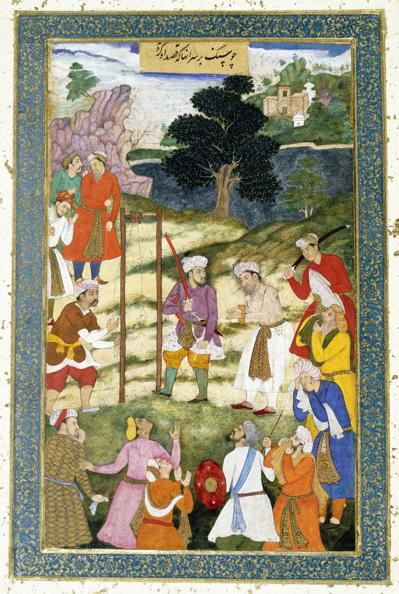

الحسين بن منصور الحلاج
الحرف · النور · الفناء · الحج · المحاكمة · الذاكرة
بطاقة تاريخية
الاسم: أبو المغيث الحسين بن منصور الحلاج البيضاوي.
الميلاد: نحو 244هـ/857م، طور قرب البيضاء في فارس.
الوفاة: بغداد، 309هـ/922م.
انتقل صغيرًا إلى واسط وحفظ القرآن، ثم اتصل بسهل التستري وعمرو المكي وبيئة الجنيد. كان عربي الكتابة رغم أصله الفارسي.
لماذا هو مهم؟
لأنه يقف عند تقاطع التصوف المبكر، الخطاب الشعبي، الحج، الرمز والحرف، السلطة العباسية، ثم الذاكرة الأدبية التي حولته إلى أشهر «شهيد صوفي» تقريبًا.
المسار الزمني والجغرافي
فارس → واسط: الطفولة والتعليم وحفظ القرآن.
تستر والبصرة وبغداد: صحبة متصوفة مبكرين؛ الزواج؛ اختلافه التدريجي مع بيئة التصوف المتحفظ.
مكة: ثلاث رحلات حج/زيارة في السيرة التقليدية؛ الأولى ارتبطت بخلوة وصمت وصيام طويل.
خراسان وما وراء النهر: نحو خمس سنوات من الوعظ؛ ثم رحلة إلى الهند وتركستان.
بغداد: نفوذ عام، اتهامات دينية وسياسية، ثم سجن يقارب تسع سنوات ومحاكمة وإعدام سنة 922.
الطواسين — صوت الحلاج الأقرب إلينا
أهم أثر باقٍ هو كتاب الطواسين: أحد عشر تأملًا تستخدم اللغة مع الرسوم الخطية والرموز لمحاولة التعبير عن خبرة روحية تتجاوز العبارة المباشرة. لذلك نفصل في LuxDot بين «النص» و«الرسم» و«التفسير اللاحق».
النور المحمدي
يفتتح الكتاب بمادة مرتبطة بالسراج/النور المحمدي؛ ما يجعل محمد ﷺ والنور محورًا أصيلًا في عالم الحلاج، لا مجرد «أنا الحق».
إبليس والطاعة
أطول أقسام الطواسين يعالج إبليس بوصفه مشكلة في التوحيد والطاعة: التمسك بفهم ذاتي للتوحيد لا يلغي حقيقة العصيان للأمر الإلهي.
الفناء
الكتابات تنضح بالرغبة في محو الذات في الله. أما عبارة «أنا الحق» الشهيرة فلا تظهر في مخطوط موثوق من مؤلفاته الباقية، وإن كان معناها منسجمًا مع جانب من تراثه.
رسم تفسير الحلاج: الفراشة والمصباح
إعادة رسم تفسيرية من LuxDot وليست صورة مخطوط: الفراشة تدور حول المصباح ثم تفنى في نوره. الحلاج من أقدم من استخدم هذه الصورة بالعربية، ثم صارت من أشهر رموز الشعر الصوفي الفارسي.
الحج: عقدة مركزية لا هامشية
الحج يظهر ثلاث مرات كنقاط تحول في سيرته. والمفارقة أن أحد أشهر مبررات إدانته اللاحقة ارتبط بنص نُسب إليه عن إقامة بدائل/تمثيلات للكعبة لمن لا يستطيع الحج. لذلك لا يصح اختزاله إلى «رفض الكعبة»؛ سيرته نفسها شديدة الارتباط بمكة.
صلة LuxDot: نربط الحلاج بعقدة مكة/الحج بخط تاريخي صلب، وبمصفوفة المهدي فقط عبر «مكة كمكان مشترك في تقليدين مختلفين» دون ادعاء علاقة نبوئية.
من التجربة الخاصة إلى المجال العام
بعد إحدى مراحل مكة بدأ الحلاج يتكلم علنًا عن خبرته ويعظ جمهورًا واسعًا، وترك الزي الصوفي الخاص. هذا التحول من «سر الطريق» إلى خطاب العامة ساهم في خلافه مع شيوخ أكثر تحفظًا وفي جعل قضيته سياسية واجتماعية، لا عقائدية فقط.
المحاكمة والسجن والإعدام
قضيته امتدت سنوات داخل عالم عباسي مضطرب، وتداخلت فيها اتهامات بالقرمطية والسحر والعقائد غير المألوفة مع الخوف من نفوذه. بقي مسجونًا نحو تسع سنوات. في 24 ذي القعدة 309هـ تعرض لعقوبة قاسية ثم قتل، وأحرق جسده ونثر الرماد في دجلة وفق الرواية التاريخية التي تلخصها Iranica.

صوت الحلاج ↔ الحلاج الذي صنعته الذاكرة
طبقة A — النصوص
الطواسين، مجموعة الشعر المنسوبة إليه، والمواد التي يمكن ردها إلى تقاليد نصية مبكرة.
طبقة B — الأخبار
أخبار الحلاج: روايات وأقوال وسيرة، مهمة لكنها ليست كلها كلام الحلاج المباشر.
طبقة C — الذاكرة
الهجويري ثم العطار والرومي والأدب الفارسي؛ هنا يتضخم مشهد «أنا الحق» والاستشهاد وتصبح الشخصية رمزًا أدبيًا وروحيًا.
الحلاج ← علم الحروف ← ابن عربي
هذه أقوى وصلة إلى أبحاث LuxDot الحالية. ابن عربي يذكر الحلاج في سياق علم الحروف، والدراسة الحديثة لعلم الحروف عند ابن عربي تضع الحلاج ضمن من ورثوا/عرفوا هذا العلم. لذلك الرابط إلى مصفوفة المهدي يمر عبر ابن عربي وعلم الحروف، لا عبر ادعاء أن الحلاج تنبأ بالمهدي.
المسار: الحلاج → الحرف/الطواسين → ابن عربي → علم الحروف → الباب 366 والمهدي. كل سهم له درجة ثقة مستقلة.
الحلاج والمسيح
المقارنة مع آلام المسيح أصبحت بارزة خصوصًا في عمل لويس ماسينيون الحديث. نسجلها ضمن «تاريخ التلقي والمقارنة الدينية»، لا كقول للحلاج إنه المسيح ولا كدليل على وحدة الشخصيتين.
تقاطعات LuxDot — نتيجة التدقيق
🟢 موثق
الحلاج ↔ مكة والحج
الحلاج ↔ الطواسين والرمز
الحلاج ↔ الفناء
الحلاج ↔ خراسان
الحلاج ↔ علم الحروف عند ابن عربي
🟡 مقارنة
الحلاج ↔ المسيح/الآلام عبر تاريخ التلقي
الحلاج ↔ الضوء/الفراشة وهوية LuxDot البصرية
الحلاج ↔ نموذج إعلان الخبرة الروحية للعامة
≈ لا نرفعه إلى دليل
نحو 9 سنوات سجن ↔ التسعة عند ابن عربي
خراسان ↔ روايات الرايات السود
مكة ↔ سيناريو المهدي
مصادر وتوثيق
Encyclopaedia Iranica — Hallaj · فهرس طبعة الطواسين لمسيّنيون 1913 · دراسة علم الحروف عند ابن عربي وعيسى وذكر الحلاج · منمنمة إعدام الحلاج، 1307، ملك عام
{kind=link}
المصادر الثانوية لا تُساوى بالنصوص الأولية. المرحلة التالية المقترحة: فهرسة الرسوم الأصلية في الطواسين رسمًا رسمًا وربط كل رسم بالنص المحيط به.